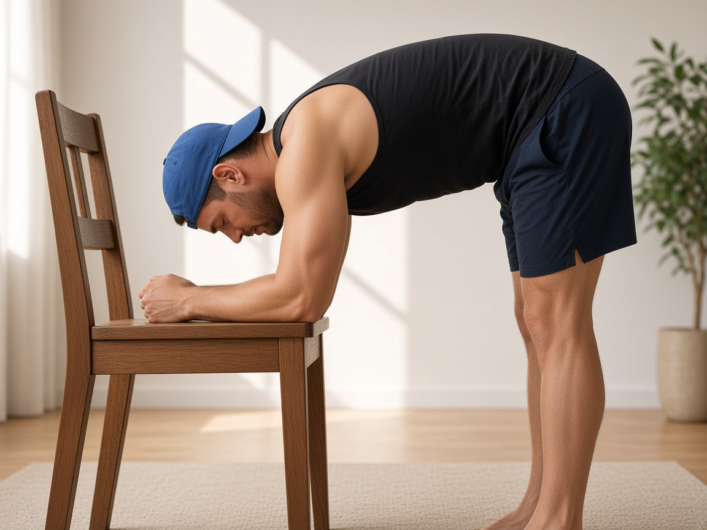
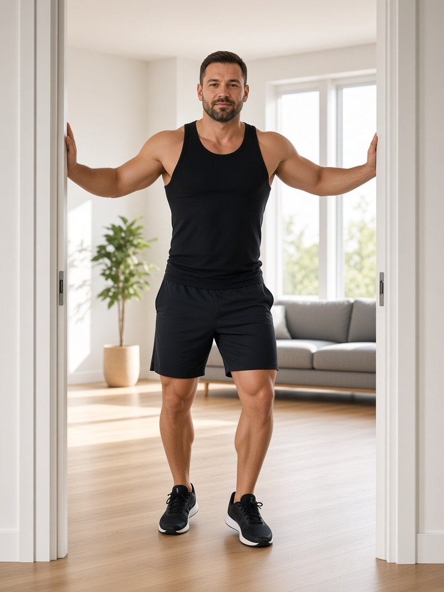

!
Только вне острой фазы
Комплекс — строго после снятия острого болевого синдрома. Если есть прострелы и трудно ходить — сначала к врачу (курс НПВС по назначению: обычно 5–7 дней).
Artur Cheremisin Fitness
Домашняя памятка
Декомпрессия, снятие спазмов и восстановление мобильности без осевой нагрузки.
Комплекс — строго после снятия острого болевого синдрома. Если есть прострелы и трудно ходить — сначала к врачу (курс НПВС по назначению: обычно 5–7 дней).
Пока грыжа активна, точечный массаж может усилить воспаление. Нужны декомпрессия и мягкое вытяжение.
Ни до позы, ни во время вытяжения, ни при возврате поясница не напрягается. Вес — на руках/ногах, кор полностью расслаблен.
Результат даёт регулярность изо дня в день, а не разовая тренировка.

Снимаем глубокий зажим, который тянет поясницу.
Убираем спазм в пояснично‑крестцовом отделе.
Возвращаем мобильность и декомпрессию без давления.


Основной комплекс вытяжений
Продолжение

